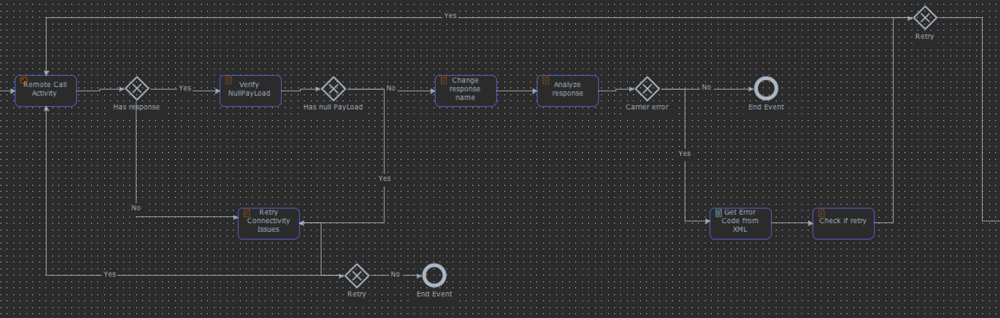
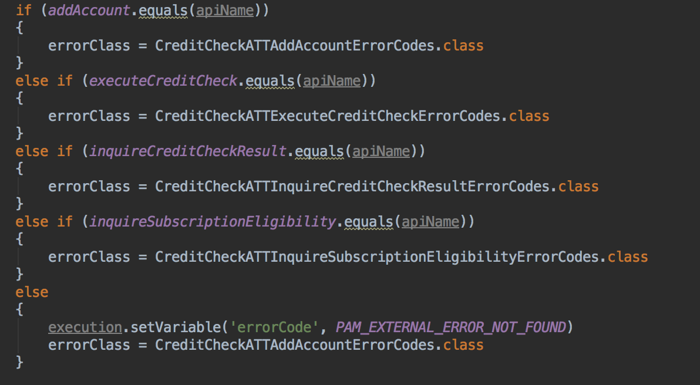
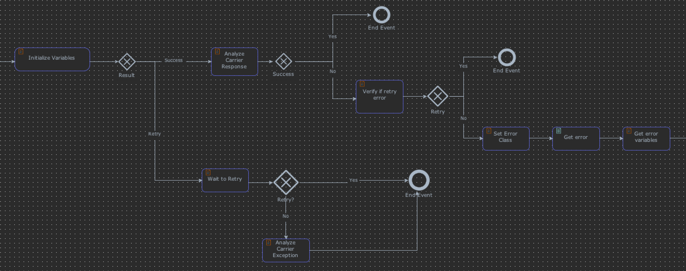
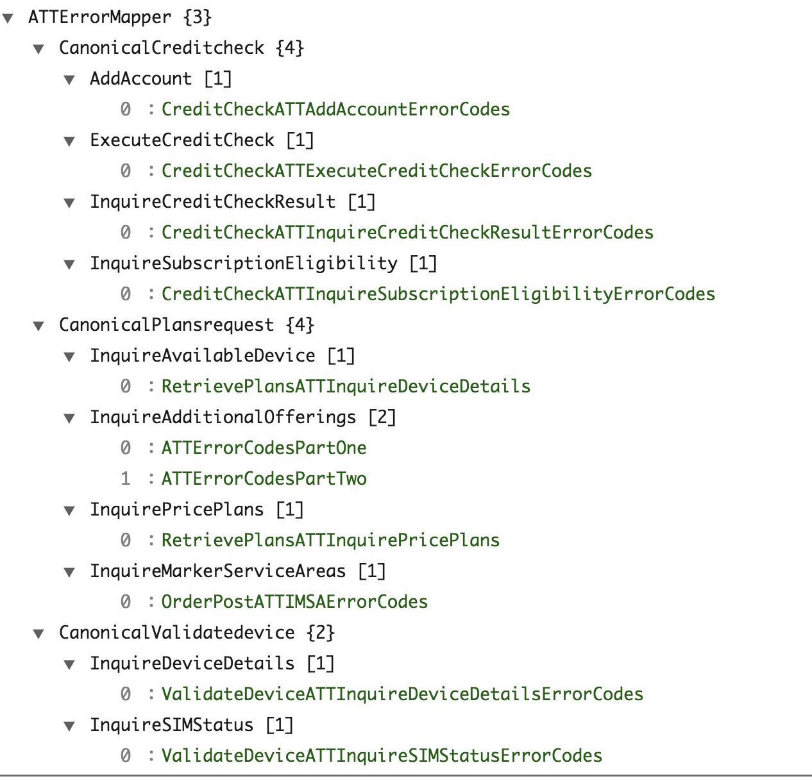

Demo
Previous sprint 22.5/26 -> 87%Current sprint 20.5/21 -> 97%
SOHO SUPPORT
- Release 31.5
- Release 32.0
ESB Migration Plan
| Canonical API | VZN Migrated | ATT Migrated |
|---|---|---|
| AccountLookup | DONE | DONE |
| CreditCheck | DONE | DONE |
| RetrievePaymentPrograms | DONE | DONE |
| RetrievePlans | DONE | |
| RetrievePlansAddOns | DONE |
| Canonical API | VZN Migrated | ATT Migrated |
|---|---|---|
| ValidateDevice | DONE | |
| CheckTradeIn | IN PROGRESS | |
| NumberPort | DONE | |
| ValidateCart | DONE | |
| CreateOrder | PENDING | |
| SubmitOrder | PENDING | |
| SubmitReturn | PENDING | |
| CancelOrder | PENDING | |
| SubmitPayment | PENDING |
MAIN TOPICS - ESB REPLACEMENT
- AT&T NUMBER PORT MIGRATION
- AT&T VALIDATE CART MIGRATION
AT&T NUMBER PORT MIGRATION
Successfuly migrated AT&T Number Port migration.- InquireMarketServiceArea
- InquireAvailableDevice
- InquirePricePlans
- InquireAdditionalOfferings
Solution
- Create a new workflow from the old one
- Create a feature toggle for this canonical api
- Create each mapping and header mapping with the new generated classes
- Change the REST call with the new invoker class
- Fix usages of the carrier response after the carrier call using the new atributes
- Implement the common error handling in this canonical api
Let's go to the code
Challenges
- Redo some work due to changes in the new generated classes
ATT Common Error Handling
A Problem
- New Exception management in PAM Proxy
- Duplicated code for error management on all the carrier calls
- Duplicated workflow logic for response analysis and error handling eg: Retry logic
- Different error codes mapping logic for each API call
- Different versions for Exception classes from carrier, eg: v118, v126, v236
Workflow for Error handling after ESB Call
Error code mapping
Common Error Handling for ATT API Calls in PAM Proxy
- Common workflow for carrier response analysis
- Unified ErrorCode mapping
Common workflow for carrier response analysis
Unified Error Mapper
Map from Canonical API Name and Carrier API to Error Code Enumeration
| ==> |  |